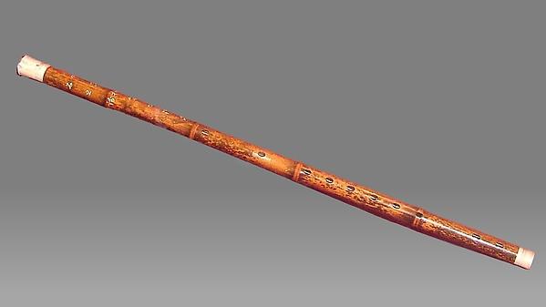
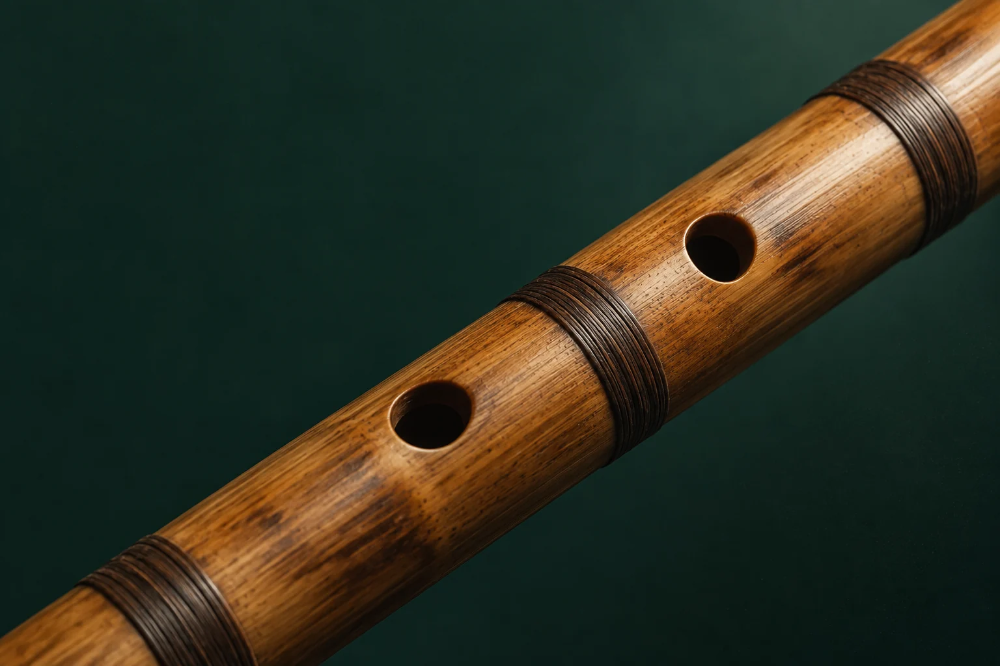

The Met · 89.4.62 · 十九世紀後期公共領域圖像
查看館藏出處 ↗
竹笛入門
竹笛是甚麼：形制、聲音與用途
談竹笛，先要劃清範圍：這個知識庫所說的竹笛，究竟是哪一種笛。之後再從結構、笛膜談到常見類型與演奏用途，一步一步立起基本概念。
閱讀專題 ：竹笛是甚麼：形制、聲音與用途

竹笛入門
談竹笛，先要劃清範圍：這個知識庫所說的竹笛，究竟是哪一種笛。之後再從結構、笛膜談到常見類型與演奏用途，一步一步立起基本概念。
閱讀專題 ：竹笛是甚麼：形制、聲音與用途竹笛入門
從膜孔的位置、薄膜的振動，到鬆緊之間的反應和日常的檢查，一步步說清笛膜已經證實了的聲學作用；貼法上仍待補證的細節，也不含糊放過。
閱讀專題 ：笛膜：材料、貼法、聲學與故障作品研讀
從署名、創作年代，談到崑曲素材、曲式、裝飾音與錄音目錄，為《姑蘇行》立一篇可逐一核查的作品導讀。
閱讀專題 ：《姑蘇行》：江南曲笛語彙、三段結構與版本辨識初學、備課或查考，各有起點。
文章附有來源、證據摘錄與編輯紀錄；部分核對由 AI 輔助完成，並非外部專家審定。書目條目、未完專題和已成文內容分開標示，方便判斷哪些資料可以怎樣使用。
查看收錄進度及資料限制 →研究論文 · 2026
PubMed Central
研究論文 · 2025-05-01
Xinmeng Luan、Song Wang、Gary Scavone、Zijin Li
研究論文 · 2025
Yuwei Liang、Lan He、Liang Zhang、Haiyang Zhang、Guizhang Jiang、Ruizhe Liu、Zhenbo Liu